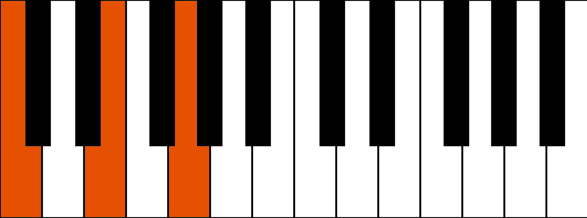
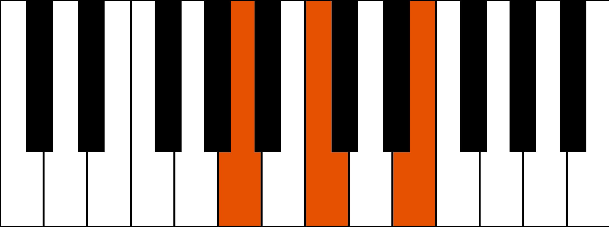
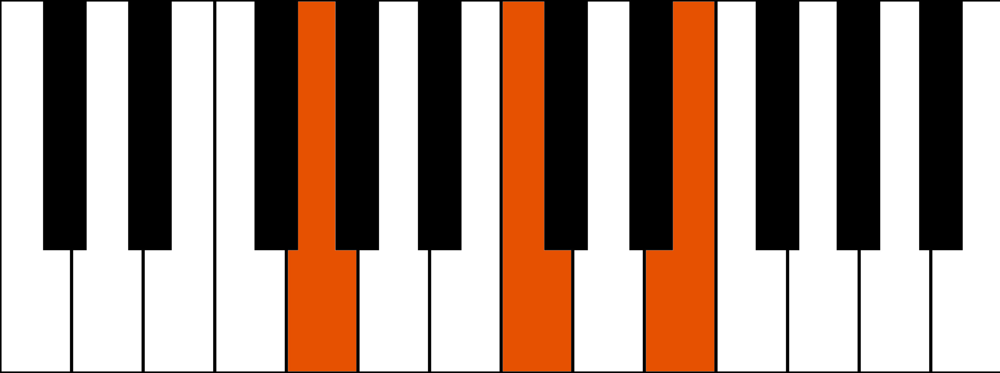

Rivolto
Che cos'è un rivolto
Capita molto spesso di utilizzare gli accordi in posizioni diverse da quelle standard, quelle in cui alla sinistra estrema dell'accordo trovi la nota che gli dà il nome.
Ad esempio,un DO Maggiore è formato da DO – MI – SOL.
Lo stesso accordo possiamo suonarlo in altre due posizioni diverse, chiamati Rivolti e cioè il 1° Rivolto MI – SOL – DO e il 2° Rivolto SOL – DO – MI.
I rivolti servono principalmente a due scopi:
-
rendere più agevole il cambio di accordi durante l'esecuzione
-
suonare gli stessi accordi con sonorità differenti
Esempio di rivolto:
suonando un Do Maggiore così, accordo di base

E dovendo poi passare all'accordo di La Minore

Il passaggio dal Do al La minore sarà abbastanza lungo come movimento di mano.
Ma utilizzando il rivolto verrà facilitato e velocizzato il passaggio fra questi due comunissimi accordi.
Invece,suonando il Do Maggiore così

il passaggio al La Minore
sarà molto più rapido.